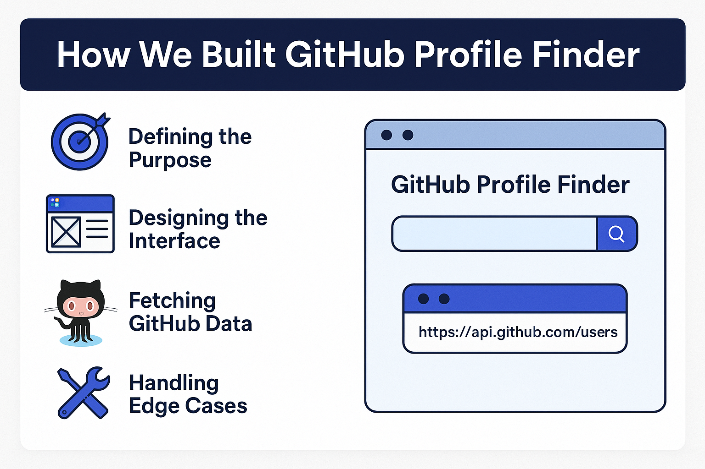

In the world of web development, interacting with external APIs is a fundamental skill. To demonstrate this, we built the GitHub Profile Finder—a modern, lightning-fast, and responsive web application that allows users to instantly search and view public data about any GitHub developer. Built using a robust stack of HTML, CSS, and Vanilla JavaScript (with the architecture ready to scale into React or Vue), this application consumes GitHub’s public REST API and transforms raw JSON data into a clean, highly readable, and aesthetically pleasing profile card.
Before writing a single line of code, we needed to establish what this tool was meant to achieve. The goal was to create a lightweight, intuitive search tool that developers or recruiters could use to quickly gauge a programmer's GitHub presence. The primary objectives included:
Great applications require great design. We utilized Figma for our initial wireframing process. The focus was on a "mobile-first" approach, ensuring the layout remained minimal, elegant, and fully functional on both desktop monitors and smartphone screens. We opted for a dark mode aesthetic, heavily inspired by GitHub's own dark theme, using high-contrast text and subtle box shadows to make the profile card pop off the screen. The data hierarchy was structured so that the most critical information (Name and Bio) draws the eye first, followed by the metrics (Followers, Repos).

The core engine of this application is the GitHub API. We utilized the modern fetch() API in JavaScript to make asynchronous HTTP requests. The endpoint we targeted is:
https://api.github.com/users/{username}
When a user submits a search, our JavaScript function dynamically injects the input username into this URL. The API returns a comprehensive JSON object containing all the public details of that user. We then parse this JSON data, extract the specific variables we need (like avatar_url, public_repos, and bio), and dynamically update the DOM (Document Object Model) to render the UI.
An application is only as good as how it handles failures. We implemented robust error handling to ensure a smooth user experience under all circumstances:
Once development and testing were complete locally, we deployed the application using Vercel for CI/CD (Continuous Integration/Continuous Deployment). Vercel provides a globally distributed Edge Network, meaning our app loads incredibly fast regardless of where the user is located in the world. We also optimized our CSS for minimal file size and deferred the loading of non-critical JavaScript to ensure the fastest possible First Contentful Paint (FCP).
The GitHub Profile Finder is widely considered a perfect beginner-to-intermediate project. It bridges the gap between static web pages and dynamic, data-driven web applications. By building this, developers gain crucial hands-on experience with RESTful APIs, asynchronous JavaScript (Promises and Async/Await), complex DOM manipulation, and responsive web design. Whether you are building it for your portfolio or just for practice, the skills learned here translate directly to enterprise-level software development.